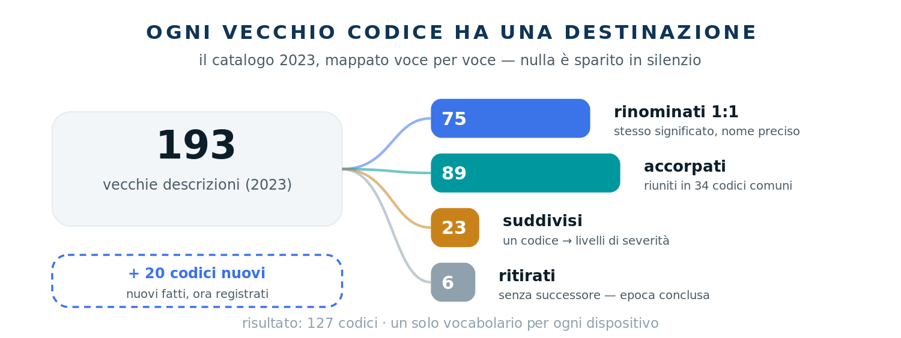
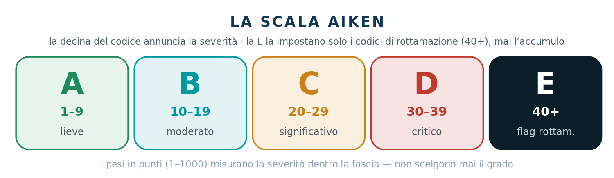
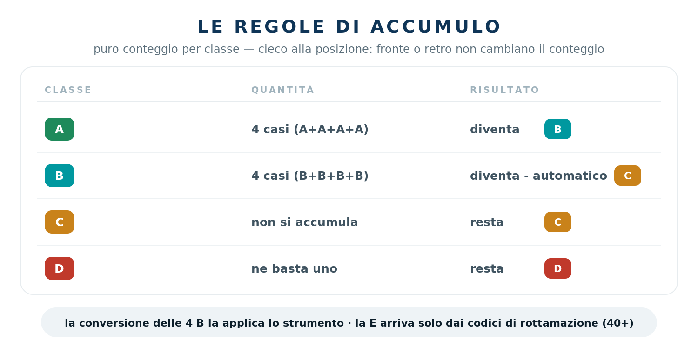
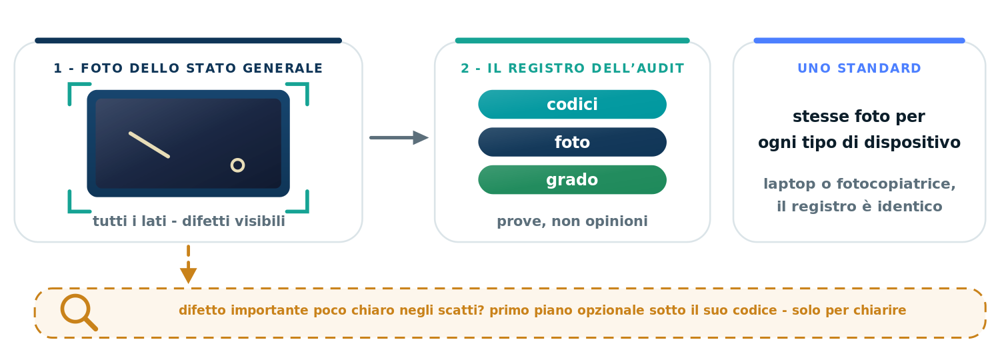

Il sistema di grading PCaudit si è evoluto: gradi, codici, punti, logica e foto. Tutti i 193 codici storici sono stati mappati uno a uno — e G2026 è ora il nostro catalogo predefinito per ogni programma cliente.
Livelli di severità per componente — lieve, medio, grave — così il registro cattura esattamente ciò che l'auditor vede, e il report legge esattamente com'è il dispositivo.
Un unico set di codici per laptop, mobile, stampanti, server e tutto il resto. Si impara una volta; significa la stessa cosa su ogni banco e su ogni riga di report.
La D ora significa esattamente "critico", e un flag E dedicato dà alle unità a fine vita un posto proprio sulla scala.
Fasce batteria misurate, blocchi con nome preciso, un peso in punti su ogni codice — più fatti verificati per unità di quanti il registro ne abbia mai portati.

La decina del numero di codice annuncia ancora la severità — quell'istinto si trasferisce direttamente. La novità sta in fondo alla tabella.
| Fascia | Decina | Significato | vs. 2023 |
|---|---|---|---|
| A | 1–9 | lieve | invariato |
| B | 10–19 | moderato | invariato |
| C | 20–29 | significativo | invariato |
| D | 30–39 | critico | definizione più netta — la D ora significa esattamente "critico" |
| E | 40+ | flag rottamazione | nuova — la impostano solo i codici di rottamazione espliciti. Nessun accumulo arriva mai alla E. |

Del tutto nuova in G2026. Ogni codice porta un peso numerico, e il peso dice a colpo d'occhio quanto pesa un rilievo, anche dentro la stessa fascia.
Come leggerla: due codici B non sono uguali — un 25 pesa più di un 10, e i pesi lo rendono visibile. Tre compiti: misurare la severità leggendo una riga di report, sciogliere i pareggi nelle decisioni di confine (i pesi indicano il lato più probabile) e alimentare la futura automazione del controllo di conformità. Un non-compito, detto chiaramente: i punti non sono la decisione di grading. Le unità si gradano con le regole di accumulo qui sotto — mai sommando numeri.
Il cambiamento più silenzioso è quello che fa risparmiare più memoria: i dialetti per dispositivo non esistono più.
CABA1 MCBA1 PCBA1 → CABA1
Dove 2023 aveva un codice graffio per i computer, un altro per i mobile e un altro per le stampanti, G2026 ne ha uno. Un difetto del cabinet è un difetto del cabinet, su un server come su uno smartphone. Il vocabolario si impara una volta sola — e significa la stessa cosa su ogni riga di ogni report.
| Vecchio | Nuovo | Fascia · punti |
|---|---|---|
| GENF33 — "porta dati o connettore danneggiato/rotto" | CONF10 Errori porta lievi | B · 25 |
| CONF11 Errori porta medi | B · 50 | |
| CONF20 Errori porta gravi | C · 100 |
| Vecchio | Nuovo | Fascia · punti |
|---|---|---|
| un solo codice — "case leggermente graffiato/ammaccato/scheggiato" | CABA1 Difetti minori (fronte) | A · 4 |
| CABA2 Difetti minori (retro) | A · 2 |
Fronte e retro sono sempre stati giudicati diversamente nella testa dell'auditor — il fronte è ciò che l'acquirente vede. Ora la differenza è nei codici stessi, a ogni livello di severità — e i pesi concordano: l'usura frontale pesa il doppio.
| Vecchio | Nuovo | Fascia · punti |
|---|---|---|
| "schermo pesantemente graffiato/macchiato/scheggiato" — viveva nei 20, in C | DSPA20 Danno medio al display | C · 100 |
| DSPA31 Danno grave al display | D · 1000 |
La linea è la frattura. Qualsiasi crepa, scheggiatura o rottura del vetro — per quanto piccola, per quanto bello il resto del pannello — è danno grave al display: grado D. Con i codici 2023 il danno pesante allo schermo era una C; G2026 alza l'asticella — aggiornate l'istinto. I graffi si gradano ancora con il test dell'unghia; rotto è rotto.
"Batteria degradata" era una voce unica. Ora la batteria è una misura, e ogni fascia è un codice a sé:
Come funziona il registro: le fasce degradate (<80%) ricevono sempre il loro codice, su ogni unità — il pass automatico di Aiken non è la registrazione. La fascia sana BATF1 si scrive solo su unità C e D con batteria: spesso vendute per ricondizionamento, e una batteria sana è parte del loro valore. Su unità A e B non registrare nulla — nessun codice batteria significa ≥80% per definizione.
Le distinzioni che non cambiavano mai l'esito sono sparite. Uno scanner barcode con il laser morto e uno con il grilletto morto significavano la stessa cosa per il cliente — ora sono entrambi OTHF31 "Barcode scanner faulty". Processore mancante, scheda madre mancante → OTHM31 "Missing essential parts".
Sei codici hanno lasciato il catalogo — tra cui l'intera famiglia delle unità ottiche (estetica, vassoio, rumore, guasto, mancante). Il catalogo ora riflette l'hardware che arriva davvero al banco.
Ogni codice ritirato e ogni accorpamento, per nome — generato dalla tabella ufficiale di transizione.
| Vecchi codici | Vecchia descrizione |
|---|---|
| OPTA1 POPA1 | Optical drive - cosmetic defects |
| OPTF11 POPF11 | Optical Drive tray does not eject |
| OPTF12 POPF12 | Noisy Optical Drive |
| OPTF13 POPF13 | Defective Optical Drive |
| OPTM11 POPM11 | Missing Optical drive |
| OTHF1 POTF1 | S/N and/or P/N not configured (BIOS) |
Queste 6 voci non hanno successore — la loro epoca è conclusa.
| Vecchi codici assorbiti | Nuovo codice |
|---|---|
| MONA14 Non-removable sticker | CABA16 Marcature di sicurezza permanenti/rimozione etichette |
| BATA1 PBTA1 Broken or loose latch on battery | CABA21 Rottura lieve dell'involucro |
| CABF5 PCBF5 Loose Laptop hinges | CABA26 Cerniera difettosa |
| PRTF23 Defective replaceable parts or consumables | CABM10 Consumabili mancanti |
| CABM1 MCBM1 PCBM1 Missing cosmetic parts MONM24 PRTM17 Missing part(s) - cosmetics KEYM2 PKYM2 Missing Trackpoint | CABM15 Finiture/coperture mancanti |
| MONM12 Missind stand screws | CABM18 Viti mancanti (importanti/numerose) |
| CABM11 PCBM11 Missing AIO stand | CABM22 Piede/stand mancante |
| PRTM12 Missing paper input tray(s) PRTM13 Missing paper output tray(s) | CABM23 Vassoio/i mancante/i |
| CAMF23 MCMF23 Rear camera glass broken/cracked/chipped CAMA11 PWBA11 camera glass broken/cracked/chipped | CAMA20 Vetro della fotocamera crepato |
| CAMF11 MCMF11 Front camera - poor quality image CAMF12 MCMF12 Back camera - poor quality image CAMF21 MCMF21 Defective front camera CAMF22 MCMF22 Defective back camera CAMF11 PWBF11 Defective Webcam CAMF12 PWBF12 Webcam - poor quality image | CAMF20 Fotocamera difettosa |
| MPTF24 PORF24 USB - no data connection MPTF25 PORF15 PORF25 PPTF15 Unusable headset port MPTF26 PORF26 Unusable SD-card reader | CONF10 Errori lievi alle porte |
| PORF22 PPTF22 Unusable DOCK port | CONF11 Errori medi alle porte |
| MNTF23 NETF23 Non-working WLAN | CONF23 WiFi difettoso |
| LCDF2 MLCF2 PLCF2 LCD - Spots of white light MONF15 Spots of white light on LCD MONF24 Few or scattered dead/lit pixels | DSPF10 Immagine - macchie lievi/retroilluminazione/pochi pixel morti |
| LCDF22 MLCF22 LCD Soft shadow/afterimage LCDF21 LCDF23 MLCF23 MONF25 PLCF21 Line of dead/lit pixels on LCD LCDF23 LCDF25 MLCF25 PLCF23 LCD - Unbalanced RGB colors MONF33 Unbalanced RGB colors LCDF3 PLCF3 Soft shadow on LCD | DSPF20 Immagine - macchie medie/retroilluminazione/immagine residua/diversi pixel morti |
| LCDF22 LCDF24 MLCF24 MONF26 PLCF22 Area of dead/lit pixels on LCD | DSPF31 Immagine - macchie gravi/burn-in/molti pixel morti |
| LCDF24 LCDF26 MLCF26 PLCF24 Unusable LCD - dark, no image, other defects MONF31 The screen turns on and off MONF32 The screen makes a noise MONF34 Unusable Monitor - dark, no image, other defects LCDF25 MONF35 PLCF25 Broken LCD glass | DSPF32 LCD difettoso/rotto/crepato/ammaccato/mancante |
| HDDF11 PHDF11 Noisy Hard Drive FSDF31 Read/Write errors HDDF1 Bad sectors HDDF2 S.M.A.R.T Warnings HDDF31 Damaged connector | HDDF11 Disco difettoso (estraibile) |
| HDDF14 PHDF14 HDD removed for destruction | HDDM10 Disco mancante |
| POIA1 PPDA1 Touchpad - Worn button(s) | INPF1 Touchpad - usura lieve |
| KEYF11 PKYF11 Non-working key(s) on keyboard KEYF12 PKYF12 Loose key(s) KEYF14 PKYF14 Loose keyboard KEYF21 PKYF21 Unusable Keyboard KEYM11 PKYM11 Missing keycap(s) KEYM21 PKYM21 Missing keyboard | INPF20 Tastiera - usura grave/tasti mancanti/difettosa |
| POIA21 PPDA21 Broken/cracked touchpad POIF11 PPDF11 Touchpad - Inaccurate movement POIF12 PPDF12 Touchpad - Defective left button POIF13 PPDF13 Touchpad - Defective right button POIF14 PPDF14 Touchpad - Middle button does not work well POIF15 PPDF15 Two or three defective touchpad buttons POIF21 PPDF21 Defective touchpad POIM11 PPDM11 Touchpad - Missing button(s) | INPF21 Touchpad - usura grave/scheggiato/rotto/difettoso |
| LCKL34 MLKL34 PLKL34 Microsoft ID lock | LCKL36 Blocco Microsoft Intune/Autopilot |
| LCKL39 MLKL39 PLKL39 Password locked 308 | LCKL39 Impossibile sbloccare |
| MOTF14 OTHF14 Accelerometer non working | OTHF10 Giroscopio difettoso |
| CABF21 MCBF21 Broken or unusable physical button(s) MONF36 PRTF32 Non-working control button(s) MONM23 PRTM16 Missing Monitor control button(s) | OTHF20 Pulsanti mancanti/funzionamento difettoso |
| PCBF11 Noisy Fan CABF21 PCBF21 Faulty fan CABM21 PCBM21 Missing fan CABF11 Noisy Fan | OTHF21 Ventola difettosa/mancante |
| GENF36 Barcode; defective/broken/loose laser emitter GENF37 Barcode; non functioning trigger | OTHF31 Scanner di codici a barre difettoso |
| GENF35 Defective or damaged motherboard FSDF32 Defective device USBF31 Defective product | OTHF33 Non funziona - prodotto rotto |
| GENM32 Missing processor GENM33 Missing motherboard | OTHM31 Parti essenziali mancanti |
| GENM1 Missing Power Supply Unit MONM22 Missing Monitor Power Adapter MPWM1 POWM1 No charger POWF11 PPWF11 Power Supply Unit - noisy or faulty fan POWF21 PPWF21 Defective Power Supply Unit / Adapter POWF22 PPWF22 Incompatible power Supply Unit / Adapter POWM1 PPWM1 Missing Power Supply Unit / Adapter | POWM1 Caricatore standard mancante/difettoso |
| PRTM15 Missing essential part, unable to print | PRTF31 Errore hardware interno irreversibile della stampante |
| PRTF31 Defective or broken LCD | PRTF33 Pannello di controllo difettoso |
| MSNF11 PSNF12 SNDF11 SNDF12 Poor quality sound MSNF21 SNDF21 No sound on loudspeaker PSNF11 SNDF11 Non-working Sound | SNDF21 Altoparlante/uscita audio difettosi |
88 vecchie voci sono confluite in 34 codici di destinazione.
Nuovi fatti ora registrati — piccole cose che un acquirente nota. Tutti e 20, per esteso:
Le nuove sezioni del catalogo, con la stessa codifica a colori dell’Academy.
A · lieve B · moderato C · significativo D · critico E · flag rottamazione
Gran parte della tabella non si è mossa. Il cambiamento è la regola tre — dove la vecchia nota a piè di pagina è diventata legge.
| Rilievi | 2023 | G2026 |
|---|---|---|
| Usura A, retro | resta A | resta A — la micro-usura posteriore non alza mai il grado, in nessuna quantità |
| A sul fronte ×3 | diventa B | diventa B — usura lieve dove l'utente guarda, tre volte, non è più "come nuovo" |
| B ×3 | meccanicamente C nota: "correggere al grado migliore se l'impressione generale è buona" | confine B/C — decide la vendibilità. La scelta è dell'auditor: autonoma, giudicata come farebbe un acquirente |
| C, in qualsiasi numero | resta C | resta C — la C non si accumula mai: cinque difetti significativi e uno sono entrambi C |
| una D | D | D — ne basta una, qualunque altra cosa sia vera |
Rileggete la vecchia nota: era lei a fare il lavoro vero. G2026 la promuove a regola e si affida al giudizio dell'auditor. Quando una scelta è davvero in dubbio: prima il manuale, poi il QC manager. Una breve nota Aiken sulle decisioni al limite aiuta il QC a seguire il ragionamento — uno strumento, non un obbligo.

L'unità: tre difetti medi su coperchio e palmrest (classe B ciascuno) + i soliti micro-graffi sulla base (usura A posteriore).
| 2023 | G2026 | |
|---|---|---|
| Usura posteriore | registrata, ignorata | registrata, ignorata — uguale |
| Tre B frontali | C meccanica, con la nota applicata a discrezione dell’auditor | confine B/C — l'auditor guarda l'unità intera come farebbe un acquirente |
| Verdetto | C (tipicamente) | schermo pulito, tastiera solida, presentabile a distanza di braccio → B. Davvero stanca → C. Decide l'auditor. |
La stessa unità — ma il lato ora è una scelta di giudizio, non meccanica. Se la scelta è davvero in equilibrio, i pesi in punti sono lo spareggio autorizzato — e il dubbio che resta va al manuale, poi al QC manager.
| Vecchio | Nuovo | Effetto |
|---|---|---|
| arrived locked 243 | LCKL1 Unlocked | l'evento è registrato; il grado non si tocca |
| password locked 308 | LCKL39 Unable to unlock + il codice di blocco specifico | D — e il processo di claim-back parte dal codice specifico |
Ogni blocco ora ha un nome: password BIOS LCKL30, password disco LCKL31, Apple ID LCKL33, Google FRP LCKL34, MDM LCKL35, Intune/Autopilot LCKL36, Knox LCKL37, splash personalizzato LCKL38. Nominare il blocco con precisione è ciò che rende veloce il claim-back.
La dottrina: foto complete dello stato generale dell'unità al Tag — ogni lato. Quelle foto sono il registro; ogni difetto codificato deve essere rintracciabile lì. I primi piani sono uno strumento, non un dovere: quando il set del Tag non rende inequivocabile un difetto importante, si aggiunge un primo piano chiarificatore. La vecchia abitudine di una foto per ogni codice è in pensione — fotografiamo la verità dell'unità, non una checklist.

Resta la costituzione che ogni regola serve.
L'istinto è conservato — e ora scritto nei codici stessi.
Fatti codificati e fotografati; il grading lo fanno le regole.
Codici, foto e grado devono concordare — quel controllo è invariato.